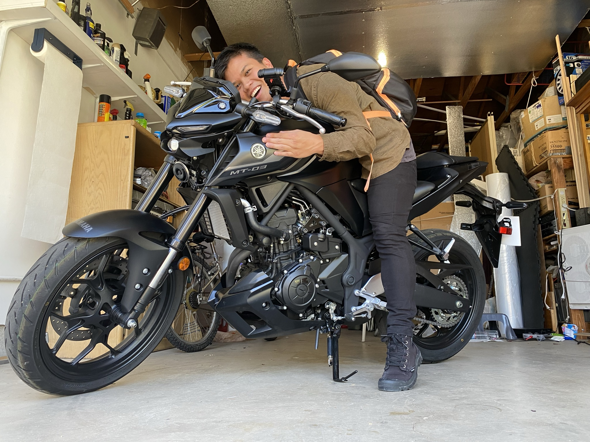

Personal Portfolio
Chatter Chinese is my most recent project. My inspiration for this application is because, as a typical introvert, it was difficult for me to find language exchange partners. To put what I learned into practice and to produce a solution to my personal problem, I created this app. Essentially, it's a social app. Features are shown below:
The Login Page
Purpose: The purpose of this page is to check if the user currently exists or to direct the user to register to access the application.
Use Firebase Authentication to register the user. A FirebaseManager model is created to handle Firebase calls.
CoreLocation
Location permission is asked and obtained from the user to user later in the app.
Fundamentals: UIKit, Segue, Optional Handling
Used UIKit (Textfields and buttons) to build the page. The pages in the app are constrained to fit landscape and portrait mode. The interface colors are chosen to be functional in dark or light mode.
If the user is registered, the user is directed to the Chat page. If the user is partially registered, they are directed to complete registration. If the user is not registered, they are directed to registration.
Optionals are checked (possibility of nil in textfields) using an if let statement.
The location is stored as a singleton to be accessed in various view controllers.
The Registration Page
Purpose: The purpose of this page is to send user data to the Firebase Database to be accessed later in the app.
Used to display information and select information to send to the database. A simple UIPicker Datasource and Delegate is implemented.
UIAlertController and Actions
Used to inform users about requirements of textfields.
Firebase Database
To store user details that are given in this registration page.
The Chat Page
The purpose of this page is to allow users (English Speakers & Chinese Speakers) to interact with each other. The message is sent to a database to be stored, loaded, and if the user wants, use the Translation MLKit to translate the message to the other language. The data uses the user's location to decide what data to show.
Uses UITableView DataSource and Delegate to access the Firebase Database to write and read data. Data is organized into a Message model, translated into a MessageCell Nib (View) to be called into the UITableView. The Nib is modified depending if the user is the sender or receiver.
Cocoapods
IQKeyboardManagerSwift: Used to allow the keyboard to appear below the presented view.
Popover: Used to show the user the translated "bubble" popover.
K3Pinyin: Used to translate Chinese characters to Romanized pinyin.
Future Implementation: Core Data to store translated messages if the user decides to study later.
Other Features
UILongPressGestureRecognizer to implement a long press gesture.
NLLanguageRecognizer used to analyze if the text is English or Chinese
Escaping Closures to handle asynchronous calls.
Which message to show to the user is dependent on the location obtained fore CoreLocation.
The Post Page
The purpose of this page is to allow users to express any thoughts. Data is created by a Model and stored in the Database as a separate collection to load.
The UIBarButton sends user to a modal view controller to write a post. The table view shows a number of votes that signifies if the post is quite interesting or not.
Post Details View Controller
Users are allowed to tap on the table view cell to see its contents by using delegate methods. The user is allowed to delete if it is his/her post. Each account can upvote or downvote once.
Protocol Usage
Protocol is used to delete a post. The delegate of AddPostViewController is the PostDetailsViewController, and once PostViewController receives the delete "message", it will delete the post from the UITableViewController and the Firebase Database.
A protocol is also used to add data from AddPostViewController.
Other
Segue: Segue preparation is used to pass the data of the post from the PostViewController to PostDetailsViewController
The Cafe Page
The purpose of this page is to allow users to express any thoughts. Data is created by a Model and stored in the Database as a separate collection to load.
Used to alert the user when pressed. Will store data once again to the database.
Bopomofo is a Mandarin Chinese learning app. The most popular way to learn Mandarin is through a
romanization system called
Hanyu Pinyin 漢語拼音. Another system that is less popular is called Zhuyin 注音符號 - Bopomofo. I personally
believe that Pinyin is more prone to
pronunciation errors, and after learning BPMF I soon realized my shortcomings. This application teaches
its students the characters and sounds of Zhuyin,
and also teaches students how to type Chinese Characters using an iPhone Zhuyin style keyboard. Features
are shown below:
Zhuyin
The purpose of this section is to teach students how to pronounce Zhuyin characters play a small typing game.
The application was created using SwiftUI. Wrapped properties such as State, Binding, and Published were used in the app.
Cocoapods
During this time I dabbled into Cocoapods before learning more about Xcode and Swift and before building Chatter Chinese. The code implements the GoogleMobileAds SDK, and displays banner ads.
Vocabulary
The purpose of this section is to practice typing Chinese words using Zhuyin characters. The section is separated into topics

Early Life to Now
I was born in the Philippines, at a town called Taal.
I lived there for about 8 years before moving to Reno, NV in USA. My parents wanted to pursue a better
life for their kids. To be quite frank with you, I can't remember much
of that past besides my mother-tongue. I went to school in Reno until I graduated college. Obtained my
US citizenship at 17, and attended University of Nevada, Reno,
majoring in Mechanical Engineering, emphasizing robotics coursework with a minor in Electrical
Engineering.
Why? To be honest, I'm not sure. I felt I just took that path because of others' expectations, or
because it was a white-collar job my parents could
be proud of. I personally didn't question it at the beginning.
University
I was calculating mathematical equations trying to figure out how objects moved, and at the same time
figuring out why things shouldn't move. I took up apprenticeships
from professors to learn more about the mechanical world, but the experiments and work proved to be dry
to my taste. Then
I attended a class called Introduction to Numerical Methods. This was the first time I even heard of the
word programming. It fascinated me enough
that when I got good at programming "for Mechanicals", I decided to get a job at the university to help
the professor teach underclassmen. Loved it so much
I kept the position for 2 years.
Throughout my junior year I thought, "did I get into the wrong major"? Fast forward to the summer of my
senior year I was having second thoughts but I couldn't turn back then, it's too expensive.
I have to help my parents with our financial situation. I need to graduate. And that's what I did. I
graduated, obtained by first job as a Mechanical Engineer.
This job led me to come to a beautiful place called Taiwan.
Project Engineer in US Branch/Working in Taiwan
I spent 2 or so years in this position, designing radiofrequency medical devices, experimenting, and
communicating with clients/customers. Guess what? I was still itching
to program. I learned some Python and applied it to my work to do repetitive tasks in the meantime, for
example scraping experiment documents and creating reports. In my off time
I was trying to learn Chinese, eventually finding my passion for languages and communication.
Eventually, I knew I needed to pursue this itch because it was what I kept thinking about. I thought,
"what if this, what if that?" and not sure if I took things for granted, but I know for sure I wouldn't
find out if I continued the way I was.
At the moment I'm trying to combine these two in my life. This is what produced the roughly coded
Bopomofo Studio and Chatter Chinese. And this website.
Fun Facts
One of favorite hobbies is dancing (currently learning Jazz Swing; Lindy Hop).
I also recently taken a liking into riding! I have a small 125CC Sym Wolf in Taiwan, and
a slightly bigger Yamaha MT03 back home in the US.
